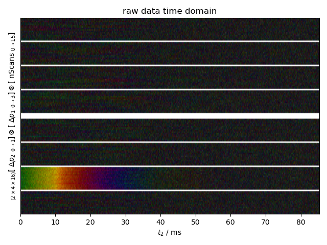
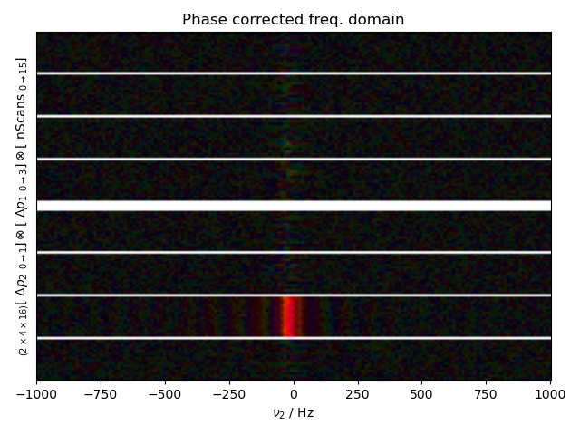
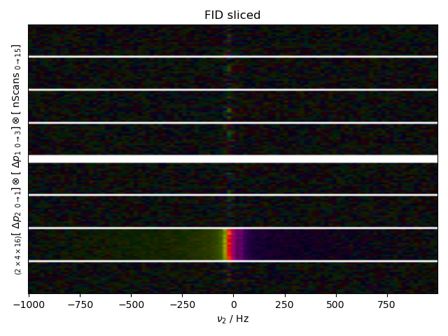
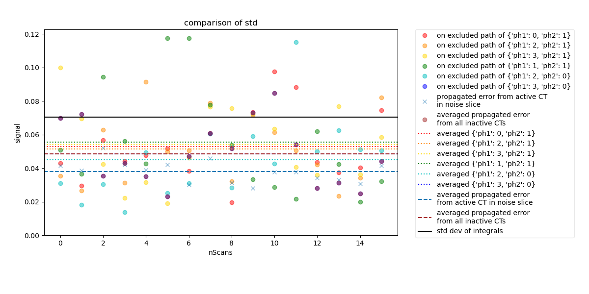

Note
Go to the end to download the full example code
Validate Inactive CT Error¶
Estimates the error of the integral of an actual data set of a standard echo experiment. Three methods of acquiring the error associated with the data are compared:
Taking an area along the active coherence transfer (CT) pathway outside of the bandwidth of the signal signal and propagating that error to estimate the error associated with the integral. (The traditional method of acquiring the error associated with a data set.)
Taking the integral in the inactive CT pathways and propagating to get the error associated with the integral in the active CT.
Taking the standard deviation of many integrals determined by integrating over the signal bandwidth of the active CT pathway. (Best method when many scans are available)
Demonstrates that by propagating the error of the integral in the inactive CTs we still get a reasonable error within the limits of traditional methods.
- 
- 
- 
- 
c:\users\jmfranck\git_repos\pyspecdata\pyspecdata\core.py:1959: UserWarning: marker is redundantly defined by the 'marker' keyword argument and the fmt string "o" (-> marker='o'). The keyword argument will take precedence.
retval = myplotfunc(*plotargs,**kwargs)
c:\users\jmfranck\git_repos\pyspecdata\pyspecdata\figlist.py:492: UserWarning: This figure includes Axes that are not compatible with tight_layout, so results might be incorrect.
plt.gcf().tight_layout()
from pyspecdata import *
from pylab import *
from matplotlib import *
from pyspecProcScripts import *
from pyspecProcScripts.correlation_alignment import correl_align
import numpy as np
rcParams['image.aspect'] = 'auto' # needed for sphinx gallery
# sphinx_gallery_thumbnail_number = 4
fl = figlist_var()
signal_pathway = {"ph1": 1, "ph2": 0}
t_range = (0, 0.05) # must start at 0 for an FID
f_range = (-1e3, 1e3)
excluded_pathways = [(0, 0), (0, 3)]
colors = ["r", "darkorange", "gold", "g", "c", "b", "m", "lightcoral"]
for thisfile, exp_type, nodename in [
(
"201113_TEMPOL_capillary_probe_16Scans_noModCoil",
"ODNP_NMR_comp/Echoes",
"signal",
)
]:
# {{{processing data
s = find_file(
thisfile,
exp_type=exp_type,
expno=nodename,
postproc="spincore_echo_v1",
lookup=lookup_table,
)
s.ift("t2")
fl.next("raw data time domain")
fl.image(s)
# {{{DC offset correction
s.ift(["ph1", "ph2"])
t_rx = (t_range[-1] / 4) * 3
s -= s["t2":(t_rx, None)].data.mean()
s.ft(["ph1", "ph2"])
# }}}
s.ft("t2")
s = s["t2":f_range]
# {{{Phase corrections
s.ift("t2")
best_shift = hermitian_function_test(select_pathway(s.C.mean('nScans'), signal_pathway))
s.setaxis("t2", lambda x: x - best_shift).register_axis({"t2": 0})
s /= zeroth_order_ph(select_pathway(s.C.mean('nScans'),signal_pathway))
fl.next("Phase corrected freq. domain")
s.ft("t2")
fl.image(s)
# }}}
s.ift("t2")
# {{{alignment
# s.ift(['ph1','ph2'])
# s.ft('t2')
# opt_shift,sigma = correl_align(s,indirect_dim='nScans',
# ph1_selection = signal_pathway['ph1'],
# ph2_selection = signal_pathway['ph2'],sigma=50)
# s.ift('t2')
# s *= np.exp(-1j*2*pi*opt_shift*s.fromaxis('t2'))
# s.ft('t2')
# fl.basename=None
# fl.next(r'after correlation, $\varphi$ domain')
# fl.image(s)
# s.ift('t2')
# s.ft(['ph1','ph2'])
# fl.next('after correl - time domain')
# fl.image(s)
# s.ft('t2')
# fl.next('after correl - freq domain')
# fl.image(s)
# s.ift('t2')
##}}}
fl.next("FID sliced")
s = s["t2" : t_range]
s["t2":0] *= 0.5
s.ft("t2")
fl.image(s)
s.reorder(["ph1", "ph2", "nScans", "t2"])
# }}}
# {{{Normalization
frq_slice = integrate_limits(select_pathway(s, signal_pathway),
convolve_method='Lorentzian')
s_integral = s["t2":frq_slice].C # the "official" copy of the integral
s_integral = select_pathway(s_integral, signal_pathway)
s_integral.integrate("t2")
avg_d = s_integral.C.mean().real.item()
s_integral /= avg_d
s /= avg_d
# }}}
# {{{integral w errors
error_pathway = (
set(
((j, k) for j in range(ndshape(s)["ph1"]) for k in range(ndshape(s)["ph2"]))
)
- set(excluded_pathways)
- set([(signal_pathway["ph1"], signal_pathway["ph2"])])
)
error_pathway = [{"ph1": j, "ph2": k} for j, k in error_pathway]
# {{{Making lists for all individual inactive pathways to get error
# associated with each one
s_int_lst = []
error_lst = []
avg_error_lst = []
for thispathway in error_pathway:
s_thisint, frq_slice_check = integral_w_errors(
s,
signal_pathway,
[thispathway],
cutoff = 0.15,
indirect="nScans",
return_frq_slice=True,
)
assert all(frq_slice_check == frq_slice)
error = s_thisint.get_error()
avg_error = error.mean().item()
s_int_lst.append(s_thisint)
error_lst.append(error)
avg_error_lst.append(avg_error)
# }}}
# {{{ Calculating propagated error averaged over all inactive CTs (as the
# function is meant to be called)
averaged_inactive, frq_slice = integral_w_errors(
s,
signal_pathway,
error_pathway,
cutoff = 0.15,
indirect="nScans",
return_frq_slice=True,
)
averaged_inactive_error = averaged_inactive.get_error()
avg_avg_error = averaged_inactive_error.mean().item()
# }}}
# {{{ Calculating propagated error along active CT on noise slice
active_error = active_propagation(s, signal_pathway, indirect="nScans")
avg_active_error = active_error.C.mean("nScans").item()
# }}}
# {{{ Plotting Errors
fl.next("comparison of std", legend=True)
for i in range(len(s_int_lst)):
fl.plot(
error_lst[i],
"o",
color=colors[i],
label="on excluded path of %s" % error_pathway[i],
)
fl.plot(active_error, "x", label="propagated error from active CT\nin noise slice")
fl.plot(
averaged_inactive_error,
"o",
color="brown",
label="averaged propagated error\nfrom all inactive CTs",
)
for i in range(len(s_int_lst)):
axhline(
y=avg_error_lst[i],
linestyle=":",
color=colors[i],
label="averaged %s" % error_pathway[i],
)
axhline(
y=avg_active_error,
linestyle="--",
label="averaged propagated error\nfrom active CT in noise slice",
)
axhline(
y=avg_avg_error,
linestyle="--",
color="brown",
label="averaged propagated error\nfrom all inactive CTs",
)
# {{{ Calculating the std dev -- error associated with the integrals
s_integral.run(np.std, "nScans")
# }}}
axhline(
y=s_integral.data,
c="k",
linestyle="-",
label="std dev of integrals",
)
# }}}
plt.axis("tight")
ax = plt.gca()
lims = list(ax.get_ylim())
lims[0] = 0
ax.set_ylim(lims)
plt.legend()
fl.show()
Total running time of the script: ( 0 minutes 2.717 seconds)